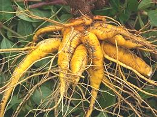
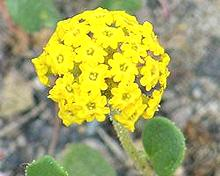

SAFARI
Users
Amaranth Family
[Family Amaranthaceae]
The Amaranths have been of culinary interest since prehistoric times the
world around, but were, and may again be, of great importance in the high
Andes mountains of South America. The family provides Beets, Sugar Beets,
Amaranth (seeds and greens), Quinoa, Spinach and other edibles.,
They are important enough as
food to have their own
Amaranth Family page .
Buckwheat & Sorrel Family
[Family Polygonaceae]
Family Polygonaceae has played a very important role in human
survival, particularly in colder regions at at higher altitudes, both in
Eurasia and North America. Today use of buckwheat seed is still very
widespread, particularly for its flavor and association with Russian
cuisine. Others in the family provide greens and leaf stems appreciated
for their tart acidic bite. This family has its own
Buckwheat & Sorrel Family
page.
Photo by Dawn Endico licensed under Creative Commons
Attribution-ShareAlike 2.0 Generic.
Cactus Family
[family Cactaceae]
Cacti are strictly New World plants, though it is possible one species
had been taken to Africa by migratory birds. They are an immensely
interesting family specialized to survive in hot arid environments and
have now been planted all over the world. They are important enough as
food to have their own
Cactus Family page.
Purslane Families
[Families Portulacaceae, Montlaceae and Talinaceae]
These families of low growing succulents have worldwide distribution
and have provided greens and roots in both the New and Old Worlds since
prehistoric times. They were all in family Portulacaceae until
the APG III of 2009 split them apart. In Australasia the seeds have also
been used to make seed cakes. These unprepossessing plants are of particular
importance because they grow in poor soil and arid conditions, in both high and
low altitudes. They now have their own
Purslane Family page.
Photo by Stan Shebs distributed under license
Creative Commons
Attribution-Share Alike 2.5 Generic.
Iceplant Family
 [Carpet Weeds; Vygies (South Africa, New Zealand); family Aizoaceae]
[Carpet Weeds; Vygies (South Africa, New Zealand); family Aizoaceae]
This is a large family of succulent plants that originated in arid parts
of South Africa and southern Angola, though there are a few Australian
and New Zealand genera. Many species have been taken worldwide as
decoratives, but a few are also used as food. This family now has its own
Ice Plants Page on this site.
Photo by US Geological Survey = public domain.
Other Carnations
Chickweed
[Chickenwort, Craches, Maruns, Winterweed; family Caryophyllaceae, Stellaria media]
Common in both Europe and North America, chickweed is an aggressive
weed, particularly in tilled or disturbed soil and is difficult to control.
It is edible though, and nutritious - used as a leaf vegetable and often
raw in salads. Chickens also like it. The edible chickweed can be identified
from similar looking varieties by the stem. Stellaria has fine hairs
on only one side of the stem while other chickweeds have fine hairs all
around the stem. This plant is also used medicinally.
Photo by
Hugo.arg
distributed under license
Creative Commons
Attribution ShareAlike v3.0.
Malabar Spinach
[Ceylon / Indian / Surinam / Chinese / Vietnamese Spinach; Broad Bologi, Poi Baagi, Calaloo, Buffalo Spinach; Mong Toi (Viet); Paag-Prung (Thai); Genjerot, Jingga, Gendola (Indonesia); Saan Choy (Cantonese); Shan Tsoi, Luo Kai, Shu Chieh, Lo Kwai (China); Pui Shak (Bengali); Kodip PasaLi (Tamil); Tsuru Murasa Kai (Japan); family Basellaceae, Basella alba]
Not related to regular spinach but rather to cactus and purslane (order Caryophyllales (Carnations)), this plant has a similar flavor to spinach, but milder without so much oxalic acid. The leaves are thick, almost succulent. One cultivar, "Rubra", has red stems.
While regular spinach is a cool temperate plant which doesn't like
the tropics at all, Malabar Spinach is a tropical vine. A fast growing
perennial, it is harvested continuously by cutting new growth. It can
be grown as an annual in warmer temperate regions.
Details and Cooking.
Mauca
 [Mauka, Chago, family Nyctaginaceae, Mirabilis expansa]
Native to the Andes mountains where it was formerly an important food
crop for the Inca. Once thought to be a "lost crop", it was rediscovered by
science in the 1960s and 1970s growing in Peru, Bolivia and Ecuador. It is
notable for growing well under conditions too harsh for most food crops.
The leaves are used raw in salads or cooked as greens,
The root tubers, which can grow up to a few pounds, must be sun dried to
remove bitterness and astringency, and it then becomes quite sweet. Water
from cooking the tubers makes a delicious drink. More information, particularly
on growing this plant (and many others), can be
found at The
Vegetable Garden.
Photo © Frank Van Keirsbilck by permission.
Olluco
[Uluuco; Papa lisa (South America); Melloco (Ecuador); Olluco (Peru); Chugua (Colombia); Ruba (Venezuela); family Basellaceae, Ullucus tuberosus]
Native to the Andes mountains where it is cultivated second only to
potatoes, both the leaves (similar to spinach) and the root tubers (similar
to potatoes) are used as food. A characteristic of the tubers is that,
unlike potatoes, they remain crisp even after they are fully cooked. The
tubers are also pickled and added to hot sauces.
Photo by Eric Hunt distributed under license Creative
Commons
Attribution-ShareAlike 3.0 Unported.
Pokeweed
 [Pokeberry, Inkberry, family Phytolaccaceae, Phytolacca
americana(North America), Phytolacca esculenta (photo) and
others]
[Pokeberry, Inkberry, family Phytolaccaceae, Phytolacca
americana(North America), Phytolacca esculenta (photo) and
others]
This generally toxic plant is important to the culinary culture of the American South. Young leaves can be eaten as "Poke Salit" after being boiled in three changes of water. The seeds are quite toxic but the berries are less so, and can be eaten and used to make pies after cooking.
Fermented pokeberry juice has been used as ink, and the United
States Declaration of Independence as well as many Civil War era letters
were written with this juice.
Photo by
Algirdas
contributed to the public domain.
Rau Dang Bien
 [Bitter Leaf, Bitter Herb, Bitter Cumin; Rau Dang (Viet); Jima, Jharasi,
Peru-n-tiray (India); Glinus oppositifolius of family
Molluginaceae]
[Bitter Leaf, Bitter Herb, Bitter Cumin; Rau Dang (Viet); Jima, Jharasi,
Peru-n-tiray (India); Glinus oppositifolius of family
Molluginaceae]
There is confusion due to more than one Rau Dang (Bitter Leaf), but all the Vietnamese sources I've found with photos of culinary usage show this one, and it's the one available in Asian markets here in Los Angeles. It is a tropical and subtropical plant that grows in very wet areas of Africa, South and Southeast Asia and Australia. With rather mild bitterness, it is an important flavoring for some Vietnamese soups. It is also eaten as a vegetable in parts of India and Southeast Asia.
This plant is now grown in Southern California (approval was probably
delayed by the State's intense suspicion of fast growing water plants
that clog irrigation channels). The name "Bitter Cumin" comes from the
cumin shaped seeds. A related species, Glinus lotoides, with
similar distribution, is similarly used.
Rau Dang
 [Bitter Leaf, Bitter Herb, Prostrate Knotweed, Birdweed, Pigweed;
Rau Dang (Viet (Bitter Leaf)); Polygonum aviculare of family
Polygonaceae]
[Bitter Leaf, Bitter Herb, Prostrate Knotweed, Birdweed, Pigweed;
Rau Dang (Viet (Bitter Leaf)); Polygonum aviculare of family
Polygonaceae]
This plant may or may not have culinary usage in Vietnam (see Rau Dang
above), but that it is called Rau Dang (Bitter Leaf) is confirmed by the
Viet version of Wikipedia. In any case, it is sour in taste from oxalic
acid, and it does have medicinal uses. This plant is a common weed in
California and many other places worldwide.
Rau Ram
 [Vietnamese Coriander, Vietnamese mint (not unique), Vietnamese cilantro,
Cambodian mint, Hot mint; Daun kesum, Daun kesom, Daun Laksa (Malay);
Phak phai (Thai); Luam laws (Hmong); Phak phaew (Laos); Chi krasang
tomhom, Chi pong tea koun (Cambodia); Phak-pai (NE India);
Persicaria odorata syn Polygonum odoratum of family
Polygonaceae]
[Vietnamese Coriander, Vietnamese mint (not unique), Vietnamese cilantro,
Cambodian mint, Hot mint; Daun kesum, Daun kesom, Daun Laksa (Malay);
Phak phai (Thai); Luam laws (Hmong); Phak phaew (Laos); Chi krasang
tomhom, Chi pong tea koun (Cambodia); Phak-pai (NE India);
Persicaria odorata syn Polygonum odoratum of family
Polygonaceae]
This rangy herb is used throughout Southeast Asia, raw in salads and
summer rolls, as a garnish and cooked, particularly in soups, but also
in some stews. It has a slightly resinous taste and is particularly
associated with Vietnamese cuisine. It is considered a suppressant of
sexual urges so is often grown by Buddhist monks to make celibacy more
tolerable. This herb is easily recognized from the spearhead shaped
leaves with two purplish splotches.
Details and Cooking.
Sand Verbinas
 [family Nyctaginaceae, Abronia latifolla (yellow), Abronia fragrans (white)]
Native to the western United States, the sand verbinas produce edible
roots that may be as large as 24 inches long. The yellow sand verbina is
native to the coastal region from Southern California to the Canadian
border. The white is native to the mountain west through about the same
latitudes.
Photo by United States Department of Parks and Recreation
= public domain.
Venus Flytrap
 [Family Droseraceae, Dionaea muscipula]
[Family Droseraceae, Dionaea muscipula]
Nothing to eat here - it's the one that does the eating. I've included it
here as an example of just how diverse the order Caryophyllales is.
Carnivorous habits were developed by several families of this order to
allow them to flourish in nutrient starved environments.
Photo by
tato grasso
distributed under license
Creative Commons
Attribution ShareAlike v2.5.
Carnations
[Clove Pink, family Caryophyllaceae, Dianthus caryophyllus]
We would be remiss not to include the Carnation itself, even though it is
not much eaten - after all, it gave it's species name to the entire order.
It is thought to be native to the Mediterranean region but this is not
certain because it's been in cultivation for at least 2000 years.
Photo © i0107.